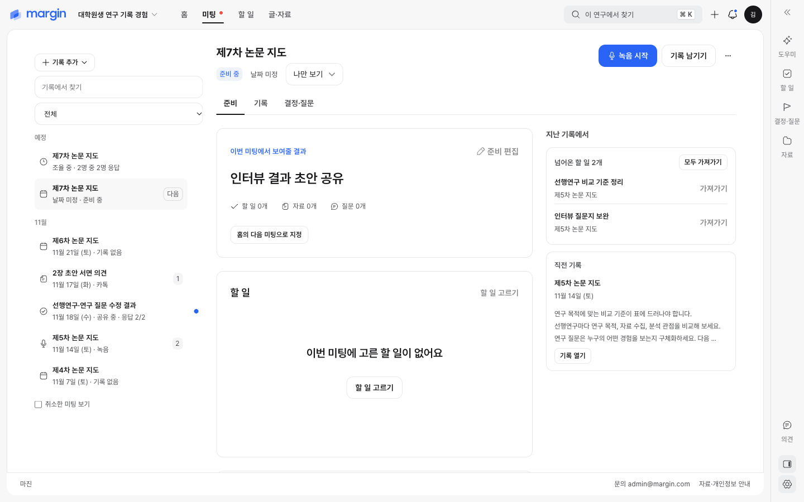

미팅 하나가 한 페이지예요
준비, 기록, 나온 할 일이 모두 미팅 한 페이지 안에 있어요. 위에서 아래로 내려가면 미팅 한 바퀴가 끝나요. 버튼으로 미팅 전과 미팅 후(카톡을 넣은 뒤)를 비교해 보세요.

margin대학원생 연구 기록 경험 ▾
홈미팅원고
이 연구에서 찾기 ⌘K교수님께 보내기김
← 미팅 목록 · 제6차 · 제7차
1 준비2 미팅3 기록4 정리
제7차 논문 지도
11월 28일(금) 오후 2시 · 연구실 · 2일 남음
이번 목표
2장 비교 기준을 교수님과 확정하기
가져갈 것 2 / 3 준비됨
선행연구 비교 기준 정리할 일 · 제5차에서
2장 초안 보여 드리기원고 · 2장 이론적 배경
비교 기준을 3개로 줄여도 되는지 여쭤보기질문
+ 가져갈 것 추가
미리 보내 두기교수님께 미팅 전에 이 목록과 원고를 보내요
미팅 기록 미팅이 끝나면 아무거나 하나 넣어 주세요
녹음하거나, 카톡을 붙여넣거나, 빨간 글씨 한글 파일을 올려 주세요
교수님 말씀을 할 일·질문·결정으로 나눠 드려요. 나는 확인만 하면 돼요.
녹음 시작카톡 붙여넣기한글·PDF 올리기
연구 도우미
이 미팅 준비
지난 미팅(제6차)에서 못 끝낸 것 보기
여쭤볼 질문을 짧고 분명하게 다듬기
2장 초안에서 교수님이 지난번 지적한 곳 다시 보기
무엇이든 물어보세요
»도우미할 일자료
margin대학원생 연구 기록 경험 ▾
홈미팅원고
이 연구에서 찾기 ⌘K교수님께 보내기김
제7차 논문 지도
11월 28일(금) 오후 2시 · 목표: 2장 비교 기준을 교수님과 확정하기
1 준비 ✓2 미팅 ✓3 기록 ✓4 정리
카톡에서 찾은 것 5개 확인하면 할 일·질문·결정으로 들어가요
붙여넣은 카톡 · 지도교수 · 11월 28일 오후 4:12 ~ 4:20 · 14줄
결정맞아요빼기
비교 기준은 3개(목적·자료·분석 관점)로 간다
“그래 세 개로 가자. 대신 왜 세 개인지 한 문장 먼저.”
할 일추가빼기
세 기준을 고른 이유를 한 문장으로 쓰기
“왜 세 개인지 한 문장 먼저.” · 언제까지: 다음 미팅 전
할 일추가빼기
표 2-1에 2023년 이후 연구 2편 더 넣기
“표는 좋은데 최근 연구가 비어 있네.”
할 일추가빼기
연구 참여자 모집 문구 초안 만들기
“다음엔 모집 문구 초안 가져와.”
질문추가빼기
IRB 서류는 언제 내야 하는지
“IRB는 학과 사무실에 다시 물어봐.” · 아직 답 없음
모두 확인다음 미팅 잡기
연구 도우미
이 미팅 정리
나온 할 일 3개로 다음 미팅 준비 목록 만들기
교수님께 "이렇게 이해했어요" 요약 보내기
표 2-1에 넣을 최근 연구 찾기
무엇이든 물어보세요
»도우미할 일자료
지금
미팅 상세 안에 준비·기록·결정·질문 탭 3개가 있고, 왼쪽엔 미팅 목록, 오른쪽엔 '지난 기록에서'가 따로 있어요. 할 일은 '할 일 고르기'로 다시 골라야 하고, 결정·질문은 다른 탭이에요. '홈의 다음 미팅으로 지정', '준비 편집', '나만 보기' 같은 버튼도 여러 개예요.
미팅 전 — 위에서 아래로 한 번에
① 이번 목표 ② 가져갈 것(할 일·원고·질문이 한 목록) ③ 기록 넣는 칸. 위쪽의 '준비 → 미팅 → 기록 → 정리' 막대가 지금 어디쯤인지 알려 줘요. '미리 보내 두기'를 누르면 교수님께 가져갈 목록과 원고가 미리 가요.
없어지는 것
탭 3개(준비·기록·결정·질문), 왼쪽 미팅 목록(위쪽 '← 미팅 목록'으로), '홈의 다음 미팅으로 지정' 버튼(가장 가까운 미팅이 자동으로 다음 미팅), '나만 보기' 선택(기록은 기본으로 나만, 보낼 때만 고름).
미팅 후 — 카톡을 붙여넣으면 이렇게 나눠져요
도우미가 교수님 말을 결정·할 일·질문으로 나누고, 원래 말(따옴표)을 옆에 붙여 줘요. 나는 '추가'나 '빼기'만 누르면 돼요. 직접 적는 건 거의 없어요. 녹음이나 빨간 글씨 한글 파일도 같은 화면으로 와요.
새로 만들어야 하는 것
카톡·한글 파일·녹음에서 결정·할 일·질문을 뽑는 기능은 지금 제품에 없어요. 지금은 녹음 전사만 있어요.
설명용 가상 데이터예요. 카톡 문장은 예시로 지은 것이에요.
참고한 화면